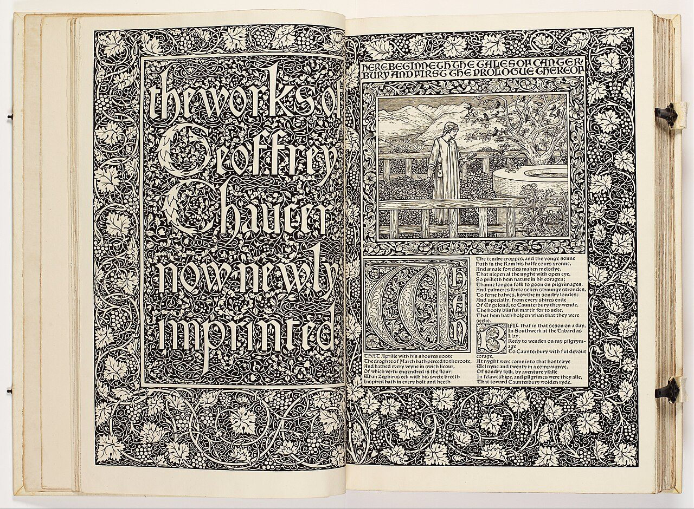

References / Book / 358
The Works of Geoffrey Chaucer (Kelmscott Chaucer)
The Kelmscott Press’s great folio: a woodcut title and a Burne-Jones picture framed in dense borders of white vine on black, with blackletter text in two columns.
- Source
- Wikimedia Commons: The Kelmscott Chaucer, Cantor Arts Center copy (Google Art Project)
- Creator
- William Morris (design and borders); Edward Burne-Jones (illustrations); Kelmscott Press
- Made
- 1896
- Style
- Arts and Crafts (agent-proposed, not yet reviewed by a person)
- Moods
- Medieval, dense, solemn
- Evidence
- Inspected the opening spread of the Iris & B. Gerald Cantor Center for Visual Arts copy (Stanford; Gift of Mr. and Mrs. Nathaniel J. Kendall) through its Google Art Project image on Commons (4501 × 3304 px; viewed at 1280 px wide). Also inspected page 29 of the Boston Public Library copy on Internet Archive (2036 × 3000 px) to check the use of red; that page is not stored.
- Reviewed
- Rights
- Open license, stored. License: public domain. Rights policy
_-_Google_Art_Project.jpg){kind=link}
Context
The Kelmscott Press, founded by William Morris and Emery Walker, published 53 books in 66 volumes between 1891 and 1898. Its books imitated 15th-century printing, and its best known is the large folio of Chaucer with many wood engravings. Wikipedia: Kelmscott Press.
Morris set smaller spaces between words and lines to make a dense block of text, with large outer margins for shoulder notes. Wikipedia: Kelmscott Press.
The Boston Public Library catalogue record on Internet Archive notes “Side notes and headings in red”. Internet Archive.
The Cantor copy measures 17.25 × 12.2 × 2.9 in. and is catalogued as an illustrated book with woodcuts. Commons record_-_Google_Art_Project.jpg).
Observed
- On the left page, the title “the works of Geoffrey Chaucer now newly imprinted” is cut as white lettering on a black ground of fine vines, inside a rectangular panel.
- Both pages have wide borders of white vine leaves and grapes on black, so dense that almost no black ground shows.
- On the right page, a Burne-Jones picture of a man in a garden sits in its own framed panel. Above it, white capitals on black read “HERE BEGINNETH THE TALES OF CANTERBURY AND FIRST THE PROLOGUE THEREOF”.
- Below the picture a large ornamented initial W opens two columns of blackletter verse.
- The frames are single black lines around each panel, not double rules. All corners are square.
- This spread is printed only in black. On page 29 of the Boston copy, the text is in two plain columns without borders, with small leaf fleurons, ornamented initials, and a red side note, “The Knyghtes Tale”, in the outer margin.
Why it belongs
The book supports the rubric’s framed, dense layout, but it separates two modes: heavily bordered opening spreads and plain two-column text pages where red is kept for small side notes.
The title lettering is in lowercase and the headings are in capitals, so the style does not require mixed-case headings.
Borrow
Save a dense border for the opening screen or section start, and keep reading pages plain.
Put short red notes in the outer margin next to a dense black text block.
Measured
Machine-extracted by tools/image-traits.py on . Full measurement.
- Mean chroma
- 0.08
- Palette
- #ebe3cf 25%
- #a19c92 11%
- #69645f 11%
- #e0d1b8 9%
- #8f8981 7%
- #78736d 6%
- #b5b0a4 6%
- #f3eee6 4%

